4.6.1. 文字や数値の出力エリア（フィールド）を作成する
アプリケーションから渡される文字や数値などのデータを出力するためのエリアを「フィールド」と呼びます。フィールドには、日付、客先、住所、製品名などのように、通常、データの内容によって帳票ごとに異なる内容が出力されます。
出力されるデータ内容によって［文字］型フィールドと［数値］型フィールドの2つに分類されます。
フィールドにデータを出力しない場合でも、計算式・編集式を設定することで、帳票に値を出力できます。また、数値データの場合は、カンマ区切りなどの表示編集を設定することも可能です。
データによってフィールドに出力される内容が異なる
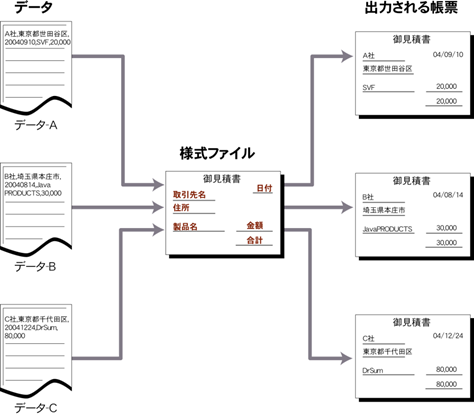
フィールドを配置する
フィールドは次の手順で作成します。
ツールボックスのをクリックし、フォームエディター上の任意の位置にマウスカーソルを移動します。
マウスカーソルが
 に変わります。
に変わります。フォームエディター上でマウスをドラッグします。
配置されるフィールドの左上部分に長さが表示されるので、任意の長さまでドラッグします。
フィールドが配置されます。
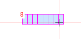
プロパティエディターで、配置したフィールドのプロパティの各種項目を設定します。
フィールドのプロパティを設定する
プロパティの設定はプロパティエディターで行います。フィールドのプロパティは［基本設定］、［拡張設定］、［書式］、［レポートライター］、［綴り設定］に分類されています。
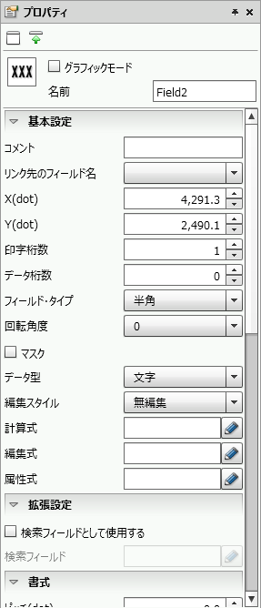
参考
色を指定する欄では、用紙のプロパティエディターにある［カラーパレット設定］で登録されている色を選択できます。カラーパレットの設定方法については、「カラーパレットを設定する」を参照してください。
共通設定
項目 | 説明 |
|---|---|
グラフィックモード | グラフィック機能を有効にするかどうかを指定します。オンにした場合は、グラフィック機能が有効となります。プロパティエディターには［グラフィックモード］の項目が追加表示され、拡張設定を行えるようになります。グラフィックモードの詳細は、「ベーシックモードとグラフィックモード」を参照してください。 |
名前 | フィールド名を入力します。フィールド名を指定していない場合は自動的に「Field1」から連番で指定されます。英数、カナ、漢字、および下線記号（_）が使えます。フィールド名の先頭文字に数字は使用しないでください。入力できる名前の長さは管理者による設定により異なります（初期値は30バイトです）。 |
基本設定
項目 | 説明 |
|---|---|
コメント | フィールドに対するコメントを入力します。コメントの内容は印刷時には使用されませんが、フィールドの意味をコメントに設定しておくと、フォームの保守が楽になります。 また、コメントに「/{FFEject=1}/」と入力することでFFEject機能を設定できます。FFEjectに関しては、「FFEject」を参照してください。 |
リンク先のフィールド名 | リンク先のフィールド名を指定します。リンク先のフィールドとは、このフィールドの印字桁数を超えたデータを受け取った場合に、超過したデータを引き継いで印刷するためのフィールドです。指定しない場合は、超過したデータはカットされます。 レコード内に作成されたフィールドでは、自分自身のフィールド名を［リンク先のフィールド名］に指定することにより、自動改行ができるようになります。このようなフィールドを「自動リンクフィールド」と呼びます。 参考
注意リンクフィールドを用いる場合はリンク元、リンク先、出力データのデータ型が一致している必要があります。 制限出力する帳票がタイ語の場合、リンクフィールドを使用した改行においては、子音、母音、声調記号などの組み合わせを考慮した正しい区切りでは改行されません。 |
X(dot) | フィールドの左上隅のX座標を指定します。 縦書きフィールドの場合は、グラフィックモードのときは右上隅のX座標となり、ベーシックモードのときは左上隅のX座標となります。
|
Y(dot) | フィールドの左上隅のY座標を指定します。 縦書きフィールドの場合は、右上隅のY座標となります。
|
印字桁数 | 実際に印字する文字数を、半角文字を1桁、全角文字を2桁として、桁数で指定します。全角/半角の判定は、SVF固有の仕様に基づきます。 編集式でFORMAT関数を使用し、小数点、カンマ、付加記号を含む出力をする場合は、それらを含めた桁数を指定してください。
参考フィールドを選択して表示される左右両端（縦書きフィールドの場合は、上下両端）の白い四角のハンドルをドラッグすると、桁数を変更できます。 注意数値型フィールドでは、桁数以上のデータが出力されると、全桁にアスタリスク（*）が印字されます。 |
データ桁数 | フィールドがデータを保持しておくためのバッファのサイズを、半角文字を1桁、全角文字を2桁として、桁数で指定します。全角/半角の判定は、SVF固有の仕様に基づきます。 計算式・編集式などの処理のため、印字桁数よりも大きいサイズでデータを保持しておきたい場合に、指定します。「0」と指定されている場合は、印字桁数と同じ値とみなされます。
自動リンクフィールドを設定している場合は、自動改行で出力する際の上限になります。 印字桁数20桁、データ桁数100桁と指定している場合は、5行まで改行されて出力されます。 |
フィールド･タイプ | フィールドに入力されるデータが、全角か、半角かを指定します。 ここで指定する半角/全角は、フィールドにセットされるデータが半角か全角かを、フォームエディター上で視覚的にわかりやすく表示するための設定です。印刷時にセットされるデータの全角/半角を変換する機能ではありません。 半角に指定していても、全角文字は問題なく出力されます。 |
回転角度 | 文字列を回転する場合は、その回転角度を指定します。指定可能値は、ベーシックモードの場合は、0・90・180・270、グラフィックモードの場合は-360～360となります。＋値の場合は反時計回り、－値の場合は時計回りに回転します。 横書きの場合は、左上隅の座標を原点に回転します。 縦書きの場合は、右上隅の座標を原点に回転します。 グラフィックモードの場合は、ハンドル操作で回転することもできます。詳細は、本項の「フィールドを回転する」を参照してください。 制限［様式の言語］がタイ語のときは、ベーシックモードでは表示されず、値は0になります。 |
マスク | 綴りページに配置されているアイテムの場合に、マスクを指定してフィールドのデータが印字されないようにできます。キーブレイクのみの目的で使用されるダミー用（印字は行わずにデータ処理の目的でのみ使用する）フィールドなどに設定します。 オンの場合は、マスクを設定します（印字されません）。 オフの場合は、マスクを設定しません（印字されます）。 |
データ型 | フィールドに出力されるデータを、数値として処理するか、文字として処理するかを指定します。 参考フィールドのデータ型が［文字］型か［数値］型かによって、フィールドバッファに保存されるデータの初期値が異なります。
|
編集スタイル | 印字する時のフィールドの配置スタイルを選択します。
|
計算式 | 四則演算やフィールド参照など、SVFで提供されている設計関数を設定できます。［計算式］欄のをクリックすると、［計算式］ダイアログが表示されます。 ［計算式］ダイアログ 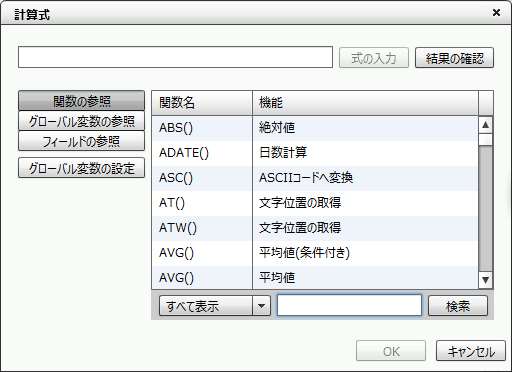 計算式の設定方法については、「計算式・編集式の基本事項」を参照してください。 |
編集式 | SVFで提供されている設計関数やシステム変数を使用したり、FORMAT関数を用いてデータの出力形式などを設定したりできます。［編集式］欄のをクリックすると、［編集式］ダイアログが表示されます。 ［編集式］ダイアログ 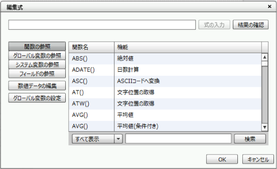 編集式の設定方法については、「計算式・編集式の基本事項」を参照してください。 参考計算式・編集式では式を指定したフィールドのフィールドバッファの値に次のような違いが発生します。
|
属性式 | 綴りページに配置されているアイテムの場合は、表示/非表示の切り替えや文字色などを関数で指定することで、表示属性を設定できます。［属性式］欄のをクリックし、［属性式設定］ダイアログで［追加］ボタンをクリックすると、［属性式追加］ダイアログが表示されます。 ［属性式追加］ダイアログ 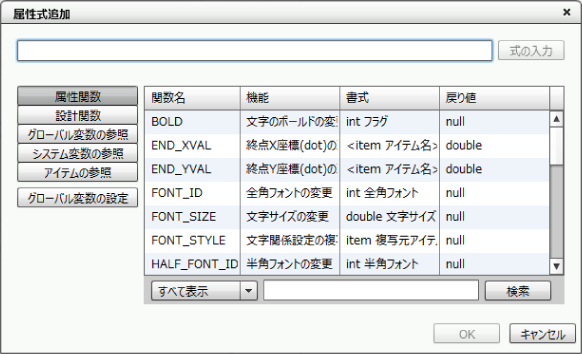 属性式の設定方法については、「属性式の設定」を参照してください。 |

拡張設定
項目 | 説明 |
|---|---|
検索フィールドとして使用する | invoiceAgent 文書管理 / AI OCRで検索フィールドとして使用するかどうかを指定します。 オンにすると、SVF実行部製品で出力するPDFファイルに検索フィールドの情報が付与されます。付与された情報は、invoiceAgent 文書管理 / AI OCRでは検索条件や仕分け条件として使用します。詳細は、invoiceAgent 文書管理 / AI OCRの製品マニュアルを参照してください。 注意
|
検索フィールド | ［検索フィールドとして使用する］がオンの場合、検索フィールド名を指定します。［データ型］、［グラフィックモード］の設定内容によって設定項目が異なります。 初期値は、フィールドの［名前］と同じ名前が設定されます。 英数、カナ、漢字、および下線記号（_）が使えます。検索フィールド名の先頭文字に数字は使用しないでください。入力できる名前の長さは管理者による設定により異なります（初期値は30バイトです）。
|
書式
項目 | 説明 |
|---|---|
ピッチ(dot) | 文字間ピッチを指定します。半角での文字間です。全角では、指定値の2倍となります。
制限［様式の言語］がタイ語のときは、表示されず、値は0になります。 |
固定ピッチ | 通常は文字をすべて一文字単位で出力しますが、オンにした場合は、条件によっては文字列として出力するようになります（対応していない機種もあります）。 この動作は、SATO機種のグローバル標準モデルまたはZebra機種、あるいは出力可能な文字数に上限のあるごく一部の機種でのみ有用です。オンにすることで機種特有の機能を利用できる場合があります。ただし、文字が設計どおりの位置に出力されない場合があります。 制限［様式の言語］がタイ語のときは、表示されず、オフになります。 |
全角フォント | 全角文字を印字する際に使用するフォントを選択します。 |
半角フォント | 半角文字を印字する際に使用するフォントを選択します。 選択できるフォントについては、「アイテムの概要」の「参考」を参照してください。 参考「なし」を選択した場合は、［全角フォント］として指定されたフォントが半角文字にも使われます。 |
文字サイズ | 印字する文字サイズを1～96ポイントの範囲内で指定します。
|
縦倍率、横倍率 | 文字の高さと幅の比率を指定します。ベーシックモードでは、指定できる倍率が0.5、1、2、3、4、6、8に限られます。 制限機種によって対応している倍率の組み合わせに制限があります。 |
文字の方向 | 印字方向を縦方向とするか、横方向とするかを選択します。 制限［様式の言語］がタイ語のときは、表示されず、［横］になります。 |
ボールド | オンにすると、出力される文字が太字になります。 |
イタリック | オンにすると、出力される文字が斜体になります。 |
アウトライン | オンにすると、出力される文字がアウトライン化します。 |
アウトラインの線幅(dot)（グラフィックモードの場合のみ） | ［アウトライン］がオンの場合は、アウトラインの線幅をドット単位で指定します。 |
マスク・イメージ（グラフィックモードの場合のみ） | ［アウトライン］がオンの場合は、アウトラインで囲まれた領域に出力する画像を指定します。 |
白文字 | オンにすると、出力される文字が白文字になります。 |
シャドウ | オンにすると、出力される文字に影が付きます。 制限機種により、指定した修飾文字が出力されない場合があります。 |
しおり | PDFファイルのしおり機能を使用する場合に、しおりの階層番号を0～9までの値で指定します。 |
グラデーションを使用（グラフィックモードの場合のみ） | オンにすると、文字色をグラデーションカラーで塗り込みます。 |
グラデーション | ［グラデーションを使用］がオンの場合は、グラデーション開始点から終了点の方向を指定します。 開始色、終了色、および区分の設定によって次のようにグラデーションが変化します。 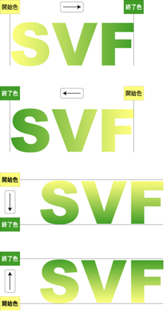 |
レポートライター
VrSetForm関数のモード4、またはモード5での動作を「レポートライターモード」と呼びます。
レポートライターモードで動作させる際、キーブレイクなど、帳票設計時に指定した次のレポートライター設定に従い、帳票の出力制御を行います。
レポートライター機能
データのソート出力
キーブレイクによる改ページ制御
ヘッダーレコード、合計レコードの自動挿入
同一キーにおける出力データの制御（先頭ページのみ、最終ページのみ、グループの最後で印刷）
グループサプレス制御
累計値のクリア
ページカウントのクリア
R系、G系関数の処理制御
参考
VrSetForm関数の詳細は、『SVF Java PRODUCTS API関数リファレンスマニュアル』の該当ページを参照してください。
レポートライター機能を使用するには、キー番号の指定が必要となります。ただし、グループサプレスの機能だけはキー番号を指定しなくても使用できます。
項目 | 説明 |
|---|---|
キー番号 | レポートライター機能を使用する場合に必要な設定です。レポートライターの機能を使用することで、改ページ制御やレコードの挿入、重複データの表示制御（グループサプレス）など帳票側での動的な出力の制御が可能となります。 データを制御するためのインデックスキーを数字で指定します。「0」と指定した場合は、キーなしとして扱われます。 キーを指定する場合は、大きなくくりからキー1、2、3と指定してください。 VrSetForm関数のモードが5の場合は、またはUniversal Connect/Xの出力モードで「ソートする」を指定している場合は、指定したキー番号順にソートされ出力されます。 |
降順 | キー番号を指定しているフィールドで、並び順を設定します。オンの場合は、降順に設定されます。オフの場合は、昇順に設定されます。 VrSetForm関数のモード5を指定した場合に有効となります。 |
改ページ | キーブレイク時に、改ページするかどうかを指定します。オンの場合は、改ページします。オフの場合は、改ページしません。 |
ヘッダーレコード名 | 先頭またはキーブレイク時にヘッダーレコードとして印字するレコード名を指定します。 |
合計レコード名 | 先頭またはキーブレイク時に合計レコードとして印字するレコード名を指定します。 |
先頭ページのみ | 同一キーの印刷が複数ページにまたがったとき、最初のページのみにフィールドを印刷するかどうかを指定します。 オンにした場合は、最初のページのみに印刷します。 オフにした場合は、すべてのページに印刷します。 |
最終ページのみ | 同一キーの印刷が複数ページにまたがったとき、最終ページのみにフィールドを印刷するかどうかを指定します。 オンにした場合は、最終ページのみに印刷します。 オフにした場合は、すべてのページに印刷します。 |
グループの最後で印字 | 明細グループの最終行だけを印字対象とするかを指定します。 オンにした場合は、最終行にのみ印刷します。 オフにした場合は、すべての行に印刷します。 |
グループサプレス | グループサプレスを行うかどうかを指定します。 オンにした場合は、グループサプレスを行います。 グループサプレスを指定して、前の行と同じ内容のデータであった場合は、空白になります。キーが指定されていなくても設定できます。 例1 グループサプレスを利用していない場合 同じデータが続く場合でも各行にそれぞれデータを印刷します。 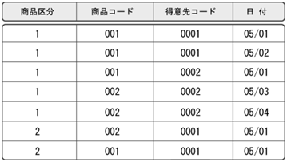 例2 キー指定せずに、商品区分、商品コード、得意先コードにグループサプレスを設定した場合 各フィールドが個々にサプレス処理されます。 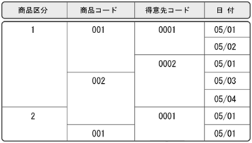 例3 商品区分、商品コード、得意先コードをキーに指定し、それぞれにグループサプレスを設定した場合 上位キーのデータが変化すると、下位キーは前と同じデータでもサプレス処理が解除されます。 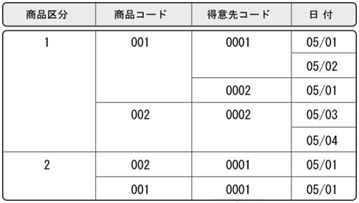 合計レコードが出力された場合は、グループサプレスは解除されます。 制限複数レコードにまたがってのグループサプレス制御はサポートしていません。 |
グループサプレス解除 | グループサプレスは同一のデータが連続する場合に作用しますが、設定したフィールドの内容が変化することによってサプレス状態を解除できます。 オンにした場合は、グループサプレスを解除します。 例 商品区分、商品コード、得意先コードをキーに指定し、商品区分、商品コードにグループサプレスを、得意先コードにグループサプレス解除を設定した場合 得意先コードの内容が変化するとほかのフィールドのサプレスがすべて解除されます。キー番号が上位のデータで切り替わる場合においても、グループ範囲が確定し、次のデータ出力から新たなグループとして開始されます。グループサプレス解除はキー指定されているフィールドにのみ設定できます。 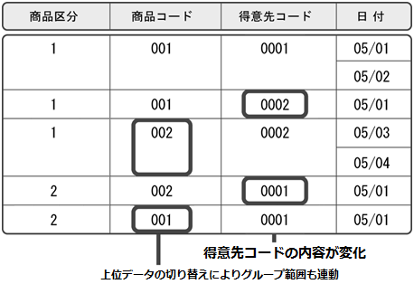 |
重複時のセンタリング | グループサプレスの結果をセルに対してセンタリングして印字するかどうかを指定します。 オンにした場合は、重複時にセンタリングして印字します。 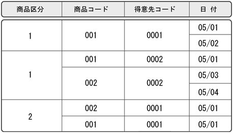 制限自動リンクフィールドと併用した場合の動作はサポートしていません。 |
重複時の罫線サプレス | 同一のデータが連続した場合は、レコードの枠線をサプレスするかどうかを指定します。 オンにした場合は、レコードの枠線をサプレスします。 |
累計値のクリア | R系の統計関数で計算される累計値を0に戻すかどうか指定します。 詳細は、「計算式・編集式の設定」の「統計関数」を参照してください。 オンにした場合は、累計値を0に戻します。 |
ページカウントのクリア | キーブレイクによる改ページが発生した際に、ページ数を1に戻すかどうかを指定します。 オンにした場合は、ページ数を1に戻します。 改ページキーが複数存在する帳票の場合でも、1つのXML様式ファイルにつき1つの改ページキーのみ設定してください。 注意キーブレイク時にページ数を1に戻して出力したい場合は、キーフィールドにページカウントのクリアを指定します。また、ページ数を出力するフィールドにはPAGE関数ではなく、システム変数_PAGE_CNTを使用する必要があります。 |
綴り設定
項目 | 説明 |
|---|---|
共通 | ［共通］ページにも配置するかどうかを指定します。 オンにした場合は、［共通］ページに配置されます。他のすべての綴りページで共有されることになり、どのページからも編集が可能となります。また、出力時にはすべての綴りページに印刷されます。 オフにした場合は、印字する対象ページの設定項目が表示されるので、出力する対象のページをオンにします。 |
n印字ページ選択 (nは任意の数字) | ［共通］をオフにした場合は、印字する対象ページの設定項目が表示されるので、印字するページをオンにします。 |
nページ目の色 (nは任意の数字) | 各綴りページでの印刷色を指定します。印刷色については、「アイテムの色設定」を参照してください。 |
拡張自動リンクモード
拡張自動リンクモードを使用すると、ページからあふれたデータを、改ページして出力し続けることが可能になります。
VrComout("/{ALNK n}/")関数を使用すると、実行するタイミングで個別にモードを指定できます。「n」に設定値を入力してモードを設定します。詳細は『SVF Java PRODUCTS API関数リファレンスマニュアル』を参照してください。
SVF環境設定では、SVFサーバーの動作環境の設定内容自体を変更できます。実行時、全体に適用されます。
SVF環境設定での設定については『SVF帳票出力製品管理ガイド』を参照してください。
各モードの設定値と説明は次のとおりです。
設定値 | 説明 |
|---|---|
0（通常の自動リンク） | 拡張自動リンクモードは無効になり、以前と同様の動作になります。 レコード内の自動リンクフィールドは、ページ内に収まらなかった場合は改ページして、次のページに出力はしません。 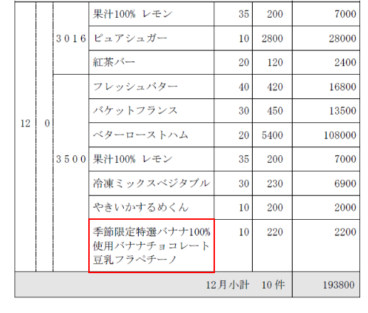 |
1（拡張自動リンクモード1） | レコード内の自動リンクフィールドは、ページ内に収まらなかった場合は次のページの先頭から出力します。それでも1ページ内に収まらない場合は、ページからあふれた部分のみが、さらに次のページに出力されます。 このモードを設定する場合、合計レコードおよび総計レコードのレコードのプロパティで［サブフォーム内に入らない場合も、印刷する］をオフにしてください。 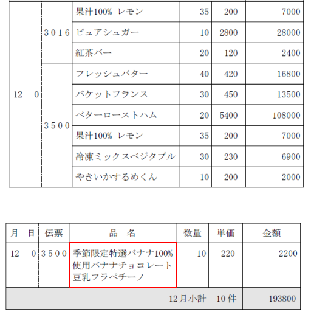 |
2（拡張自動リンクモード2） | レコード内の自動リンクフィールドは、ページ内に収まらなかった部分のみが次のページに出力されます。ただし、ヘッダーレコード、合計レコードについては、すべてがページ内に収まらない場合は、次のページの先頭から出力します（=1と同様）。 このモードを設定する場合、合計レコードのレコードのプロパティで［サブフォーム内に入らない場合も、印刷する］をオフにしてください。 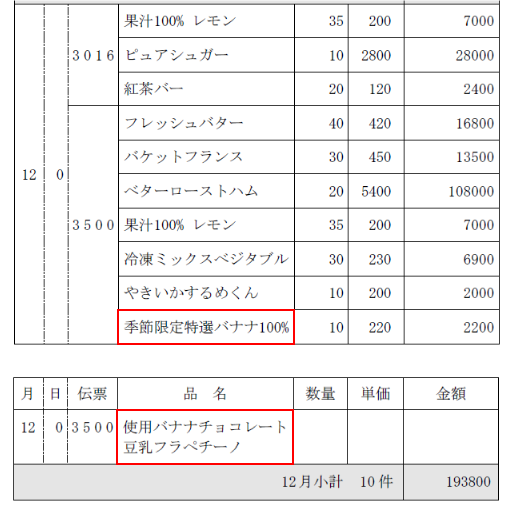 |
3（拡張自動リンクモード3） | レコード内の自動リンクフィールドは、ページ内に収まらない部分が次のページに出力されます（=2と同様）。ただし、ヘッダーレコードについては、すべてがページ内に収まらない場合は、次のページの先頭から出力します（=1と同様）。 |
注意
Report Director Enterpriseでの拡張自動リンクモードの指定は、スプール時のみ有効です。
スプール後に拡張自動リンクモードの設定を変更して印刷した場合でも、スプール時の設定で動作します。
制限
拡張自動リンクモードを有効にした状態で、同一レコード内にフォントサイズの異なる複数の自動リンクフィールドがある場合は、サイズの大きなフィールドがページからあふれても、サイズの小さなフィールドは表示できる場合があります。しかし、表示できる場合でも、レコード内のすべてのフィールドについて、同じ行数で改ページされます。
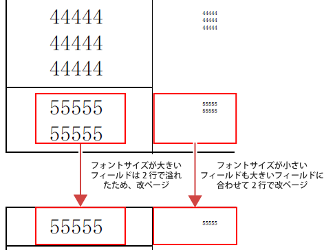
次の設定の場合は、自動リンクフィールドと拡張自動リンクモードはサポート対象外です。
サブフォームの［展開方向］が「横」
フィールドの［文字の方向］が「縦」
拡張自動リンクモードを有効にした状態で、自動リンクフィールドを使用する場合は、グラフィックモードであっても縦倍率と横倍率は限られた値（0.5、1、2、3、4、6、8）しか設定できません。
FFEject
FFEjectは、両面印刷時にキーブレイクにより改ページした次のページを表面で出力したいときに設定します。
奇数ページでキーブレイクした場合は、裏面を白紙のまま排紙します。偶数ページでキーブレイクした場合は、そのまま排紙します。
また、指定されたキーが連写内にある場合は、残りの連写枠の処理を中断し、次ページに切り替えます。次ページに切り替わったあとは連写処理が再開され、キーブレイクによる改ページ後の内容が出力されます。連写の処理を中断するため、同一ページ内の空の枠組みが印字されるのを防ぐことができます。
FFEjectを設定するには、キーブレイク対象のフィールドの［コメント］に「/{FFEject=1}/」と入力します。
FFEjectは全プリンター機種で対応しています。
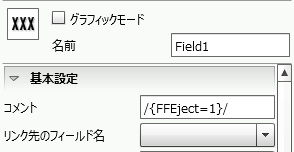
注意
対象のフィールドは［レポートライター］で［改ページ］指定されている必要があります。レポートライターの設定方法については、「レポートライター」を参照してください。
［改ページ］が複数のフィールドに指定されていて、そのうち1つのフィールドに［ページカウントのクリア］が指定されている場合は、そのキーのみFFEject設定が有効です。
ファイル出力系の機種の場合は、連写の中断のみ行います。
検索フィールドの指定
フィールドの［データ型］が「文字」の場合に、検索フィールド名を設定する手順は次のとおりです。ベーシックモードとグラフィックモードの場合で、手順、および表示されるダイアログは異なります。
［検索フィールド］欄のをクリックします。
グラフィックモードの場合、この手順は必要ありません。
［検索フィールド］ダイアログで検索フィールド名を選択し、［編集］ボタンをクリックします。
［編集］ダイアログの［検索フィールド名］に、検索フィールド名を入力します。
［検索フィールド］ダイアログでは、出力された値の一部を切り出したり、文字データを数値型や日付型に変換したりすることもできます。
［検索フィールド］ダイアログの各種ボタンの説明は、次のとおりです。
項目 | 説明 |
|---|---|
追加 | フィールドの値の一部を切り出し、複数の検索フィールドを設定する場合に追加します。1つのフィールドに複数の情報を出力している場合に、分割したデータを検索条件として利用できます。 クリックすると［追加］ダイアログが表示されます。 |
編集 | 検索フィールド名を変更する場合や、文字型データを数値型や日付型に変換する場合に編集します。 クリックすると［編集］ダイアログが表示されます。 |
削除 | 選択している検索フィールドを削除します。 |
［追加］ダイアログと［編集］ダイアログで設定できる項目は同じです。
［追加］、［編集］ダイアログの設定項目の説明は、次のとおりです。
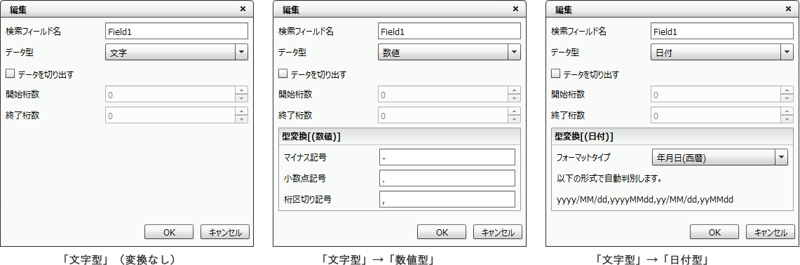
項目 | 説明 | ||||||||||||||||||
|---|---|---|---|---|---|---|---|---|---|---|---|---|---|---|---|---|---|---|---|
検索フィールド名 | 検索フィールド名を指定します。初期値は、フィールドの［名前］と同じ名前が設定されます。 英数、カナ、漢字、および下線記号（_）が使えます。検索フィールド名の先頭文字に数字は使用しないでください。入力できる名前の長さは管理者による設定により異なります（初期値は30バイトです）。 | ||||||||||||||||||
データ型 | 文字データを数値型や日付型に変換するデータ型を「文字」、「数値」、「日付」から選択します。 「文字」を指定した場合、型は変換しません。「数値」、「日付」を指定した場合、表示される［型変換[（数値）]］および［型変換[（日付）]］で型変換の設定をします。 | ||||||||||||||||||
データを切り出す（ベーシックモードの場合のみ） | 検索対象となるデータを桁数で切り出すかどうかを指定します。オンにすると［開始桁数］、［終了桁数］を指定できます。
| ||||||||||||||||||
型変換[（数値）] | 指定した記号を識別して、数値型データに変換されます。変換する際、数値として認識できない記号は、除去または変換されます。 PDFに出力する文字データのフォーマットで指定されている各記号について指定します。
| ||||||||||||||||||
型変換[（日付）] | 指定されたフォーマットの文字データを日付型データに変換します。 ［計算式］や［編集式］で日付関数を設定している場合、関数の処理結果のフォーマットを指定します。
|
フィールドの表示を切り替える
フォームに配置したフィールドは、用途に応じて次の3つの形式に切り替えて表示できます。この3つのフィールドの表示形式は、右ツールバーのをクリックして、［表示設定］ウィンドウの［フィールド］－［表示種別］で行います。
表示種別 | 説明 | 表示形式 |
|---|---|---|
桁数 | 桁数が左端に表示されます。 | |
名前 | フィールド名が表示されます。 | |
桁埋め | フィールド属性が表示されます。 |
フィールドを回転する
フィールドは、任意の方向にハンドルで回転できます。
参考
ベーシックモードの場合は、ハンドルで回転できません。
フィールドを選択します。
フィールドの右横（縦書きの場合は右下）に表示されるハンドル付近までマウスカーソルを移動します。
マウスカーソルの表示がに変わった状態で、ガイドラインと角度を参考に、回転する方向にドラッグします。
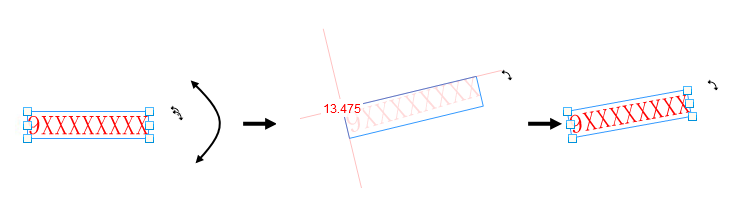
参考
回転角度は、プロパティの［回転角度］からも設定できます。
フィールドの桁数を変更する
ピッチや文字サイズを維持したままフィールドの桁数だけを変更するには、次の手順で行います。
フィールドを選択します。
フィールドの周りに表示される縦/横の辺のいずれかのハンドル付近までマウスカーソルを移動します。
マウスカーソルの表示がに変わった状態で、ガイドラインを参考に、文字の方向に合わせてドラッグします。
ピッチや文字サイズを維持したままフィールドの桁数だけが増減します。
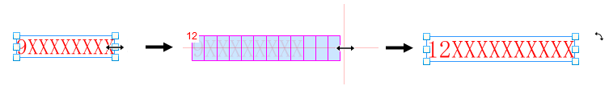
参考
フィールドの桁数は、プロパティの［印字桁数］でも指定できます。
フィールドのピッチを調整する
数量、単価、金額などの項目は、帳票の桁区切りの罫線と一致させる必要があります。
そうした場合のために、フィールドのピッチを調整して、帳票の桁間隔にあわせます。
ピッチの調整は、次の手順で行います。
フィールドを選択します。
マウスカーソルの表示がに変わった状態で、フィールドの周囲に表示されたハンドルの右端、または左端を、Ctrlキーを押しながらドラッグします。
桁数は固定のまま、ピッチをドット単位で変更できます。
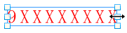
参考
ピッチの調整は、プロパティの［ピッチ(dot)］でも指定できます。